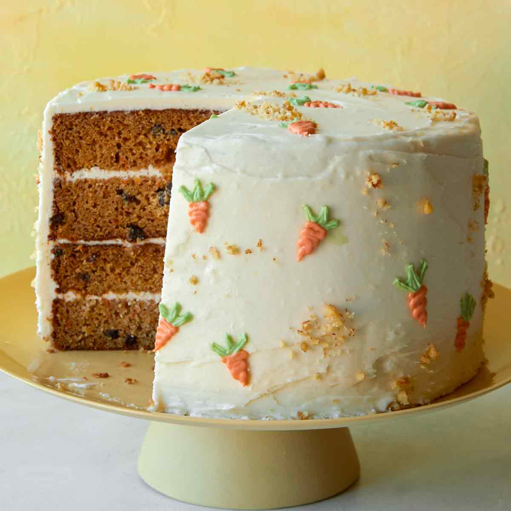

Carrot Cake

Here is the recipe for a moist, light, and fluffy carrot cake
that is topped with cream cheese frosting. This cake should be
refrigerated because of the frosting and it will last in an
airtight container in the fridge for one week.
Ingredients
- 2 cups white sugar
- 1 1/4 cups vegetable oil
- 4 eggs
- 2 teaspoons vanilla extract
- 2 cups all purpose flour
- 2 teaspoons baking powder
- 2 teaspoons cinnamon powder
- pinch of salt
- 3 cups grated carrots
- 1 cup chopped pecans
- ready made cream cheese frosting from a grocery store
Steps
- preheat oven to 350 degrees and grease a 9x13 inch pan
- beat sugar, oil, eggs, and vanilla in a large bowl
- mix in flour, baking soda, cinnamon, and salt
- stir in carrots and pecans
- pour into pan
- bake for about 40 minutes or until toothpick comes out clean
- let the cake cool completely
- frost the cake and refrigerate it for a few hours
- enjoy!